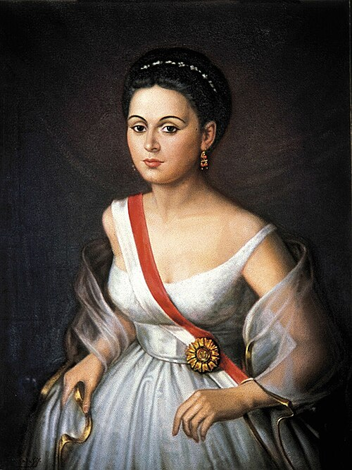
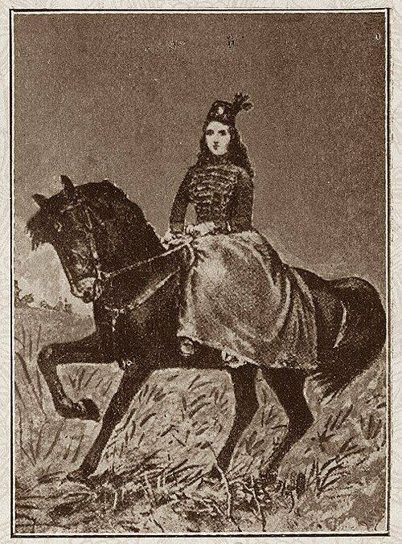
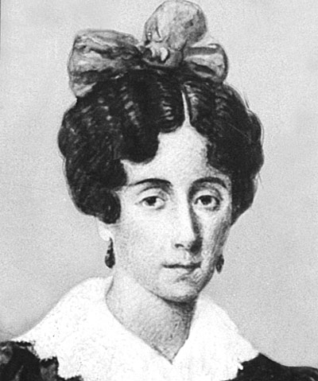
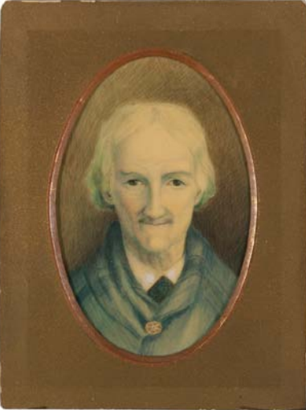
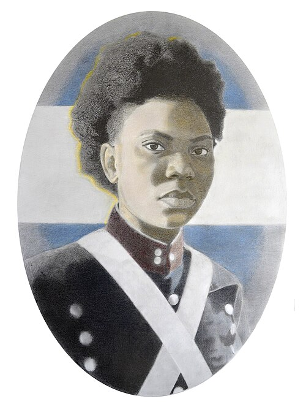
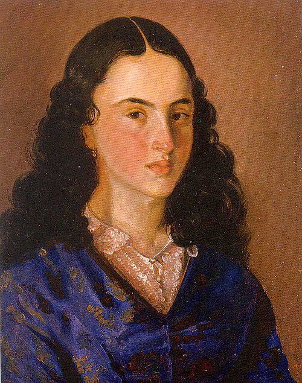

Manuela Sáenz
Quito, 1797 – Paita, 1856
Patriota ecuatoriana. Espía, estratega y confidente de Simón Bolívar.
Conocer su historiaEn este sitio recorreremos la historia de mujeres que participaron en los procesos de independencia de América del Sur y cuyo legado continúa siendo fundamental para comprender nuestra historia. Elegí una sala del recorrido para comenzar.
Conocé el contexto histórico y el papel de las mujeres en la lucha por la independencia.
Leer
Quito, 1797 – Paita, 1856
Patriota ecuatoriana. Espía, estratega y confidente de Simón Bolívar.
Conocer su historia
Chuquisaca, 1780 – Sucre, 1862
Líder militar altoperuana que luchó junto a las fuerzas patriotas.
Conocer su historia
Buenos Aires, 1786 – 1868
Referente política y cultural de la Revolución de Mayo.
Conocer su historia
Salta, 1787 – 1866
Colaboradora y líder política fundamental en la defensa del norte argentino.
Conocer su historia
Buenos Aires, c. 1766 – 1847
Conocida como "La Madre de la Patria". Capitana del Ejército del Norte.
Conocer su historia
Guaduas, 1795 – Bogotá, 1817
"La Pola": una de las principales espías de la independencia de Nueva Granada.
Conocer su historiaEl lugar de las mujeres en la independencia: una mirada final sobre su participación activa y la importancia de recuperar sus historias.
Leer reflexión